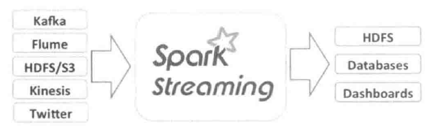

Spark Streaming 简介
Spark Steaming 是Spark核心API的一个扩展，具有吞吐量高，容错能力强的实时流数据处理系统，支持包括Kafka、Flume、HFDS/S3、Twitter、ZeroMQ以及TCP Sockets等数据源，获取数据后可以使用Map、Reduce、Join和Window等高级函数进行复杂算法的处理，处理结果存储到文件系统、数据库火战士到仪表盘等，其中Spark Streaming数据处理流程如图所示：

Spark的各个子组件都是基于Spark核心，Spark Streaming在内部的处理 机制是：先接收实时流的数据，并根据一定的时间间隔拆分成一批批的数据，这些批数据在Spark内核对应一个RDD实例，因此，流数据的DStream可以看成一组RDDs，然后调用Spark核心的作业处理这些批数据，最终得到处理后的一批批结果数据。通俗点理解的话，在流数据分成一批批后，通过一个先进先出的队列，然后Spark核心的作业从该队列中一次取出一个个批数据，把批数据封装成一个RDD，然后进行处理，这是一个典型的生产者消费者模型。
术语定义
离散流（Discretized Stream）或DStream
DStream 作为Spark Streaming的基础抽象，它代表持续性的数据流。这里数据流既可以通过外部输入源获取，也可以通过现有的DStream转换操作来获得。在内部实现上，DStream有一组时间序列上连续的RDD来表示。
在DStream中定义了名为generatedRDDs离散数据流，它是以时间为键，RDD为值的哈希列表，在流数据接收过程中，远远不断地把接收到的数据放入到该列表中，而对于不需要的就RDD从该列表中删除。
Spark Streaming特点
流式处理
Spark Streaming是讲流式计算分解成一系列短小的批处理作业。这里的批处理引擎是Spark Core，也就是把Spark Streaming的输入数据按照批处理间隔（如1s）分成一段一段的数据（Discretized Stream），每一段数据都转换成Spark中的RDD（Resilient Distributed Dataset），然后将Spark Streaming中对DStream的Transformation操作变为针对Spark中对RDD的Transformation操作，将RDD经过操作变成中检结果保存在内存中。整个流式计算根据业务的需求可以对中间的结果进行叠加或者存储到外部设备。
高容错
对于流式计算来说，容错性至关重要。每一个RDD都是一个不可变的分布式可重算的数据集，其记录着确定性的操作“血统”，所以只要输入数据是可容错的，那么任意一个RDD的分区出错或不可用，都是可以利用原始输入数据通过转换操作而重新算出的。
低延迟
Spark Streaming将流式计算分解成多个Spark Job，对于每一段数据的处理都会经过Spark DAG图分解以及Spark的任务集的调度过程。对于目前版本的Spark Streaming而言，其最小的Batch Size的选取在0.5~2s，所以Spark Streaming能够满足除对实时性要求非常高之外的所有流式准实时计算场景。
吞吐量高
Spark目前在EC2上已经能够线性扩展到100个节点，可以以树苗的延迟处理6GB/s的数据量，其吞吐量也比流行的Storm高2~5倍。
Spark Streaming 运行架构
Spark Stream相对其他流处理系统最大的优势在于流处理引擎和数据处理在同一个软件栈，其中Spark Streaming功能主要包括流处理引擎的流数据接收与存储以及批处理作业的生成与管理，而Spark核心负责处理SPark Streaming发送过来的作业。Spark Streaming 分成为Driver端和Client端，运行在Driver端为StreamingContext十里。改十里包括DStreamGraph和JobScheduler等，而Client包括ReciveSupervisor和Reciver等。